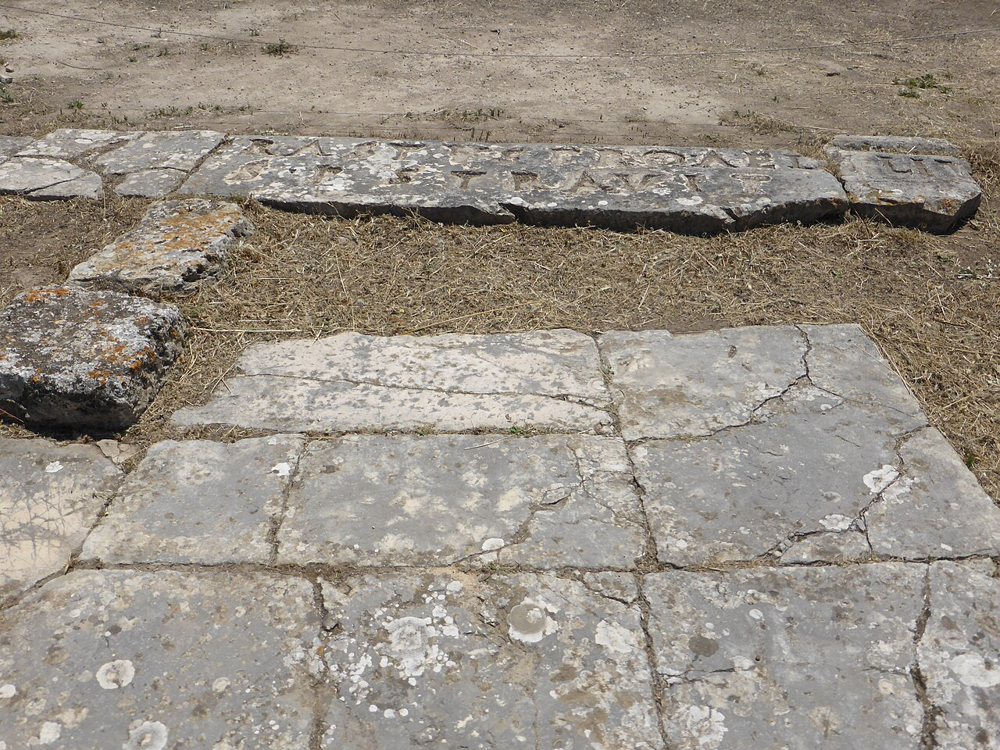

Erastus Inscription

- Find Name
- Erastus Inscription
- Historical Period
- Roman
- Artifact Date
- c. AD 50
- Date Discovered
- 1929
- Discovery Location
- Corinth, Greece
- Current Location
- Archaeological Museum of Ancient Corinth, Corinth, Greece
- Timeline Era
- Early Church
- Description
- A Latin pavement inscription near Corinth's theatre reading that Erastus, in return for his aedileship, laid the pavement at his own expense. An aedile was a senior city official responsible for public works and finances.
- Biblical Significance
- Paul greets 'Erastus, the city treasurer' of Corinth in Romans 16:23, and many scholars identify the two as the same man, though the identification is debated because the titles differ slightly. Either way, the inscription shows a high-ranking Erastus in Paul's Corinth, illustrating how the gospel reached into civic leadership.
- Evidence Class
- Contextual
- Interpretations
- Scholars debate whether the Erastus named as Corinth’s aedile is Paul’s Erastus of Romans 16:23 — the name, city, and office fit, but the inscription does not prove the identification.
- Scripture Illuminated
- Related People
- Related Books
- Related Places
- Related Events